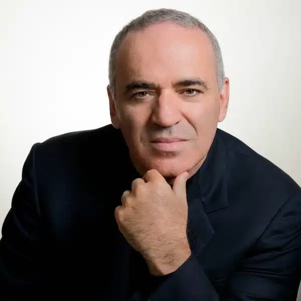
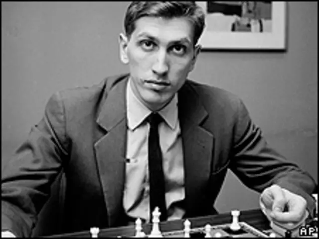
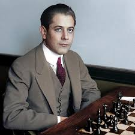

Welcome to Chess World
Explore the fascinating universe of chess. Learn the history, master the moves, and become a champion!
| Name | Info | Achievements | Photo |
|---|---|---|---|
| Magnus Carlsen | World Chess Champion from 2013 to 2023. Norwegian, known for his versatile style and dominance in multiple formats. | Grandmaster at age 13. World Champion in classical, rapid, and blitz formats. | |
| Garry Kasparov | World Champion from 1985 to 2000. A dominant figure in modern chess and longtime rival of Karpov. | Held the world No. 1 ranking for 15 years. Famous for matches against Deep Blue (won in 1996, lost in 1997). |  |
| Bobby Fischer | World Champion in 1972 after defeating Boris Spassky during the Cold War era. | The only American World Champion of the 20th century. Widely considered a chess genius. |  |
| Anatoly Karpov | World Champion from 1975 to 1985. A brilliant strategist known for his solid positional play. | FIDE World Champion in the 1990s. Winner of numerous international tournaments. |  |
| José Raúl Capablanca | World Champion from 1921 to 1927. Cuban, a master of intuitive and positional play. | World Champion with a unique style. Considered one of the most naturally talented players ever. |  |